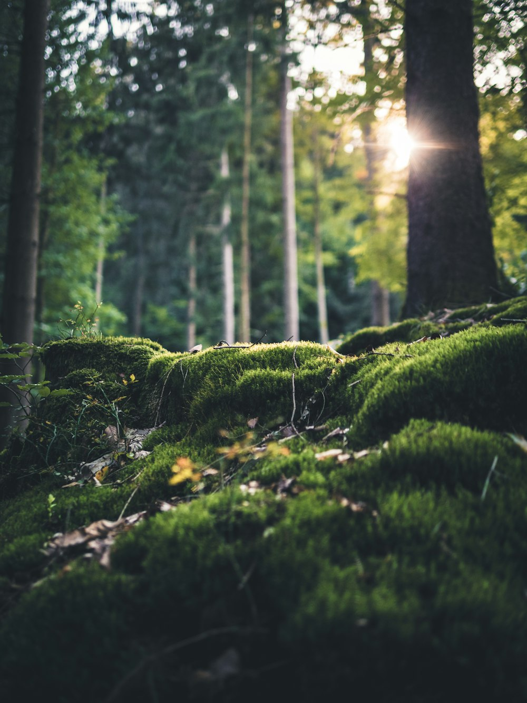

NOVA
ARCHITECTS

NOVA'DA KAMROQ — BU KO'PROQDIR

"Arxitektura shunchaki devor va tomlar yig'indisi emas — u insoniyat tabiat bilan uyg'unlashadigan jonli makondir."
Har bir loyihamizda biz xomashyolarning tabiiy go'zalligini saqlab qolgan holda, ilg'or fazoviy muhandislik texnologiyalarini birlashtiramiz. Beton, shisha va yashil flora o'rtasidagi mukammal muvozanat NOVA arxitekturasining tamal toshidir.
NOVA LOYIHALARI
Nova Aurora Tower
Tokio markazida 64 qavatli, tebranishlarga qarshi gipoid parametrik fasadli va vertikal bog'larga ega ekologik osmono'par bino.

NOVA YUTUQLARI VA STANDARTLARI
Global Obyektlar
Dunyoning 18 ta megapolisida amalga oshirilgan barqaror me'moriy loyihalar.
Xalqaro Mukofot
Nufuzli arxitektura biennalelari va dizayn assotsiatsiyalari oliy mukofotlari.
BREEAM & LEED
Barcha loyihalarimiz xalqaro yashil energiya va ekologiya standartlariga mos.
BIZ QO'LGA KIRITGAN MUKOFOTLAR
BIZNING SAN-FRANSIZKO OFISIMIZ
BIRGALIKDA YARATAMIZ
Sizning orzuingizdagi bino, shahar majmuasi yoki interyerni birgalikda reallikka aylantiramiz.